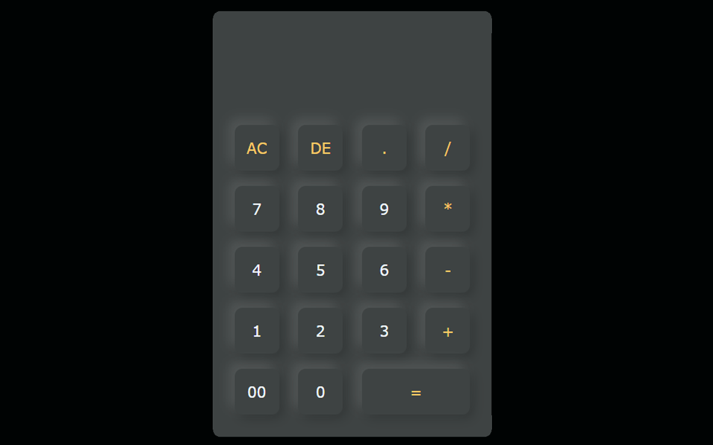

Calculadora
Calculadora web em HTML/CSS/JS com operações básicas ( +, −, ×, ÷ ), ponto decimal e botões AC/DE/00.
HTML
CSS
JavaScript

Sobral — CE
Calculadora web em HTML/CSS/JS com operações básicas ( +, −, ×, ÷ ), ponto decimal e botões AC/DE/00.
App onde você digita uma mensagem e o navegador fala.
Aplicação web para gerenciamento de tarefas com listas, prioridades e persistência local. Permite criar múltiplas listas (ex: Trabalho, Estudos) e organizar tarefas por prioridade (Urgente, Alta, Normal, Baixa).
Página web no estilo Wikipedia dedicada ao jogador fictício Gerbito, com sumário fixo, seções detalhadas e efeitos visuais interativos.
Universidade Federal do Ceará — Campus Sobral
Programe.IO — HTML, CSS, JavaScript e projeto Portfólio